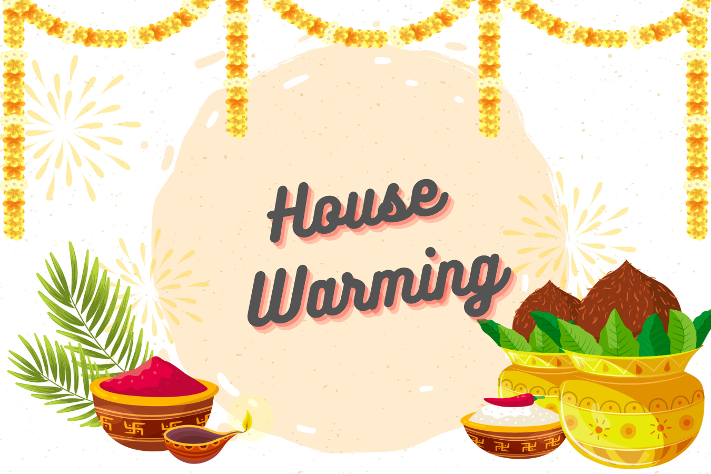

House Warming Ceremony - Invitaion!
We would love to welcome you to our Griha Pravesh celebration.

What to expect
- Traditional Rituals & Ceremonies
- The pooja will begin with Ganapati Puja, Vastu Shanti, and other auspicious prayers.
- Priests will chant mantras, and family members will participate in rituals.
- Dress Code
- Traditional attire is preferred (Kurta-Pajama/Dhoti for men, Saree/Salwar for women).
- Modest and comfortable clothing is recommended.
- Food & Prasad
- After the pooja, guests will receive prasad (holy offering) and be served a vegetarian meal.
- The food is typically simple, homemade, and Satvik (without onion and garlic)
- Atmosphere & Hospitality
- Expect a warm, spiritual, and festive environment.
- The event is an opportunity for friends and family to bless the new home.